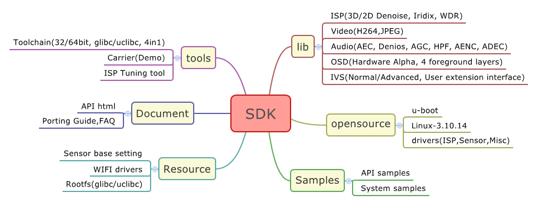
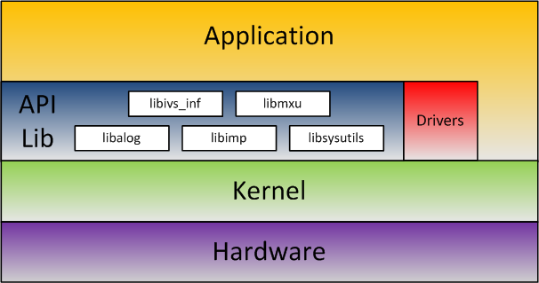

1. ISVP SDK
ISVP SDK(Software Development Kit), contains of the API library, opensource, document and reference samples etc. Developer can easyly start product development with ISVP SDK. The following is a overview of the content of ISVP SDK.

Descriptions:
1.1 API Library
1.1.1 libimp
- System——Base functions such as Binding, timestamp etc.
- ISP——Image tuning API
- FrameSource——Generate origin YUV frames
- Encoder——H264 and JPEG encoding
- IVS——Move Detection, Line Detection, Face Detection etc.
- Audio——Play, Record with AEC, AGC and Denoise etc.
- OSD——
1.1.2 libsysutils
- su_base——Base System function, such as poweroff, reboot and get RTC time etc.
- su_cipher——Encryption with AES/DES
- su_adc——ADC API
- su_misc——Other system functions
1.2 opensource
1.2.1 u-boot & Linux kernel
- u-boot is based on Version 2013.07, support network, flash utils and TF-card utils
- Linux Kernel is baesd on Version 3.10.14, support regular bus drivers. Developer can compile directly or add your own drivers
1.2.2 drivers
- ISP & Sensor driver.
- EEPROM driver, Timer driver etc.
2. System Framework
Following is The framework of ISVP-SDK:

The description of the figure above:
- Hardware Layer
- Linux Kernel
- drivers
- API lib
- libimp: Multimedia function library, such as H264 JEPG and Audio etc.
- libsysutils: System utils
- libalog: Log subsystem for debug
- libivs_inf: IVS library
- libmxu: SIMD128 instruction application library
- Application
- It is suggested that develop with the API library, and in some situation you can directly call the syscall interface to complete customized functions
3. SDK Versions
The format of SDK Versionis: “x.y.z”, their meaning is:
- x：Update when framework is changed
- y：Update when API is changed
- z：Update when lib is optimized but API is not changed
Warning, developer should update the header file when "x" or "y" version changed, in case of unknown errors.
 1.8.17
1.8.17